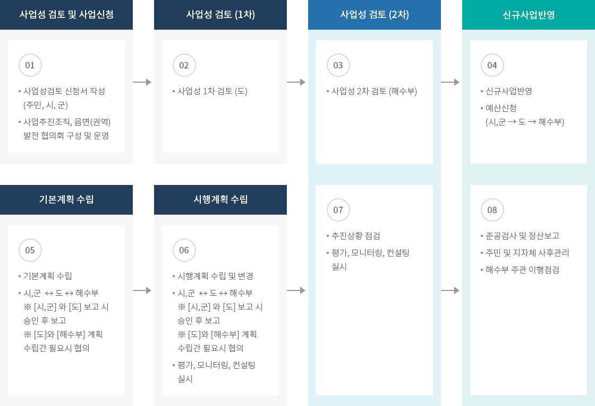

일반농산어촌개발(어촌)
- 홈
- 사업소개
- 활력있는 어촌
- 일반농산어촌개발(어촌)
추진계획
일반농산어촌개발사업
| 구분 | 사업기간 | 사업명 | 주요내용 |
|---|---|---|---|
| 고창군 | ‘18 ~ ‘21 | 만돌권역 거점개발사업 | 기초생활기반 확충, 경관개선, 주민역량강화 등 |
| 남해군 | ‘18 ~ ‘21 | 남해읍(선소) 권역단위 거점개발사업 | 기초생활기반 확충, 경관개선, 주민역량강화 등 |
| ‘18 ~ ‘22 | 답하 마을단위 특화개발사업 | 기초생활기반 확충, 경관개선, 주민역량강화 등 | |
| ‘19 ~ ‘22 | 갈현마을 특화개발사업 | 기초생활기반 확충, 경관개선, 주민역량강화 등 | |
| 보령시 | ‘19 ~ ’24 | 은포3리 마을단위 특화개발사업 | 기초생활기반 확충, 경관개선 |
| ‘20 ~ ’24 | 은포4리 마을단위 특화개발사업 | 기본계획, 실시설계, 주민역량강화 | |
| 부안군 | ‘18 ~ ’21 | 대리·전막 마을단위 특화개발사업 | 기초생활기반 확충, 경관개선, 주민역량강화 등 |
| ‘19 ~ ’23 | 격포항 권역단위 거점개발사업 | 기초생활기반 확충, 경관개선, 주민역량강화 등 | |
| 삼척시 | ‘18 ~ ‘21 | 갈남 마을단위 특화개발사업 | 기본계획, 실시설계, 주민역량강화 |
| ‘19 ~ ’22 | 임원 마을단위 특화개발사업 | 기초생활기반 확충, 경관개선, 주민역량강화 등 | |
| ’21 | 일반농산어촌개발 지역역량강화사업 | 교육, 컨설팅, 홍보 및 마케팅 | |
| 통영시 | ‘19 ~ ’21 | 적덕 마을단위 특화개발사업 | 기본계획, 실시설계, 주민역량강화 등 |
| ‘19 ~ ’23 | 소태권역 거점개발사업 | 기본계획, 실시설계, 주민역량강화 등 | |
| 태안군 | ‘20 ~ ’21 | 영목 마을단위 특화개발사업 | 기초생활기반 확충, 경관개선 |
| ‘20 ~ ’23 | 몽산포권역 어촌종합개발사업 | 기초생활기반 확충, 지연소득증대, 경관개선 | |
| 제주시 | ‘21 ~ ’25 | 금능권역 어촌테마마을 조성사업 | 기초생활기반 확충, 경관개선, 주민역량강화 등 |
| ‘21 ~ ’22 | 지역역량강화사업 | 주민역량강화, 어촌재생 전략수립 | |
| 서귀포시 | ‘21 ~ ’25 | 신양권역 어촌종합 개발사업 | 기초생활기반 확충, 지역경관개선, 주민역량강화 |
| ‘21 ~ ’24 | 고성리 마을단위 특화개발사업 | 기초생활기반 확충, 지역경관개선, 주민역량강화 | |
| ‘21 ~ ’22 | 지역역량강화사업 | 주민역량강화, 경영컨설팅, 경관개선 |
추진체계

크게보기
{kind=link}
- 01.사업성 검토 및 사업신청
- 사업성검토 신청서 작성 (주민, 시, 군)
- 사업추진조직, 읍면(권역) 발전 협의회 구성 및 운영
- 02.사업성 검토 (1차)
- 사업성 1차 검토 (도)
- 03.사업성 검토 (2차)
- 사업성 2차 검토 (해수부)
- 04.신규사업반영
- 신규사업반영
- 예산신청 (시,군 → 도 → 해수부)
- 05.기본계획 수립
- 기본계획 수립
- 시,군 ↔ 도 ↔ 해수부
※ [시,군] 와 [도] 보고 시 승인 후 보고
※ [도]와 [해수부] 계획 수립간 필요시 협의
- 06.시행계획 수립
- 시행계획 수립 및 변경
- 시,군 ↔ 도 ↔ 해수부
※ [시,군] 와 [도] 보고 시 승인 후 보고
※ [도]와 [해수부] 계획 수립간 필요시 협의 - 평가, 모니터링, 컨설팅 실시
- 07.사업성 검토 (2차)
- 추진상황 점검
- 평가, 모니터링, 컨설팅 실시
- 08.신규사업반영
- 준공검사 및 정산보고
- 주민 및 지자체 사후관리
- 해수부 주관 이행점검